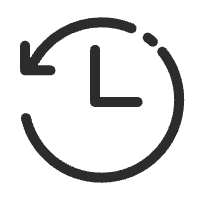
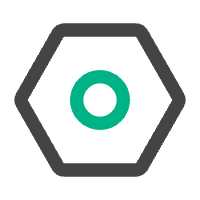

分组
最近使用
当前窗口

×
↑ ↓
上下选择(跨分组)
← →
收起 / 展开分组
Tab
切换视图
Enter
切换到选中标签
C
复制选中标签的 URL
⌫
删除选中项(有重复时先逐份删副本)
Z
撤销刚才的关闭
⇧K
清理 7 天未用的标签
Esc
清空搜索词 / 关闭
E
呼出本弹窗(全局)
/b /h
搜索 书签 / 历史(输入命令后接关键词)

设置
✕
模糊匹配(关闭后仅子串匹配)
始终显示 URL 行
自动分组(新标签按规则域名归组)
未分组标签归入 Others(未命中规则的域名)
删除标签的按键
⌘ + 退格
退格(光标在起点时)
双击退格
清理僵尸标签(7 天以上未使用,
⇧K)
自动分组规则(域名 → 组)
+ 新增组
保存规则
全局快捷键(呼出弹窗)请在
chrome://extensions/shortcuts
中自定义,默认
E